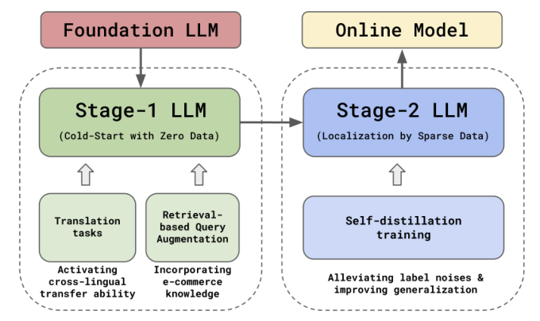

CSRM-LLM: Embracing Multilingual LLMs for Cold-Start Relevance Matching in Emerging E-commerce Markets (面向新兴电商市场冷启动相关性匹配的多语言 LLM 框架)
- 会议/期刊: CIKM 2025
- 作者与机构: Yujing Wang, Yiren Chen, Huoran Li 等，Coupang, Inc.（韩国/北京/山景城）
- 推荐链路定位: 精排（相关性判别，兼作召回过滤与排序提权）
- 研究方向: 冷启动与长尾推荐 / 大语言模型推荐
- 论文原文: 论文原文链接
- 开源代码: 暂未开源
TL;DR (1分钟核心速览)
跨境电商进入新市场时，目标语言零标注、零行为，通用 LLM 零样本又不懂电商标注规范（"红衬衫"应指人穿而非宠物装）。本文提出 CSRM-LLM：以 Orion-14B 为底座，用辅助机器翻译任务激活跨语言迁移、用检索式查询增强 (RQA) 注入电商知识、用多轮自蒸馏纠正人工标注噪声。在韩语→繁体中文迁移场景下，离线三分类 micro-F1 从 GPT-4o 的 0.850 提升至 0.965，线上缺陷率降 45.8%、会话购买率升 0.866%。
Background & Motivation (背景与核心矛盾)
- 主流范式: 相关性匹配长期走 DSSM/DRMM 类双塔或交互式精排；LLM 时代则多用零样本打分或 LLM 做标注增强。
- 前人局限: ① 通用翻译器（Google Translate、GPT-4）在 query-product 对上引入 超过 30% 的领域性错误，直接翻译训练数据反而掉点；② 电商相关性有强业务规范（替代品 vs 不相关），零样本 GPT-4o 仅 0.850，无法对齐细粒度标注指南。
- 核心洞察 (Key Insight): 多语言 LLM 的跨语言能力是"沉睡"的——源语言与目标语言样本在隐空间中距离过大（cross-lingual transfer gap 0.689），需用翻译任务显式拉近；同时人工标注在冷启动期噪声极大，模型自身的高置信软标签可充当"标签投票"。
- 本文切入点: 把问题拆成 Stage-1（零数据冷启）与 Stage-2（稀疏数据本地化）两阶段，分别用 MT 辅助任务 + RQA 与多轮自蒸馏逐级抬升。
Method (核心方法设计)
1. 整体框架 (Overall Architecture)
以开源 Orion-14B 为底座，将相关性匹配形式化为生成任务：输入 query 与商品侧特征（标题、品牌、类目、RQA 文本）拼成的 prompt，模型只对 "0/1/2" 三个 token 的条件概率归一化后输出三分类（不相关/替代/精确匹配）。Stage-1 仅用韩国市场 500 万标注做 LoRA 微调，并混入人工精翻的翻译任务（类目 5 万、品牌 5 万、标题 70 万、query 3 万）以激活跨语言迁移；同时用 LLM 教师蒸馏出的 EBR 模型生成 RQA 文本注入 prompt。Stage-2 引入台湾市场 50 万标注联合训练，并用多轮自蒸馏以软标签修正硬标签噪声。最终将三分类 LLM 蒸馏为双塔在线模型（XLM-R base，128 维），拆成 Defect 与 Exact-Match 两个二分类器分别用于过滤与提权。
flowchart TD
A["Query + 商品标题/品牌/类目"] --> B["RQA 检索增强文本"]
B --> C["Orion-14B 多任务 LoRA 微调<br/>相关性 + 机器翻译"]
C --> D["Stage-2 本地数据联合训练"]
D --> E["多轮自蒸馏纠偏"]
E --> F["蒸馏双塔在线模型<br/>Defect / EM 二分类"]
2. 关键设计拆解 (Key Designs)
-
辅助翻译任务激活跨语言迁移：痛点是不做处理时源/目标语言表征割裂。做法不是"先翻译再训练"，而是在同一 LLM 内按预设比例交错采样相关性样本与翻译样本联合优化，翻译任务权重 0.1。直觉是翻译迫使模型把两种语言的同义商品语义对齐到同一区域，实测 cross-lingual transfer gap 由 0.689 降至 0.676，且典型"菊花茶 vs 草本茶"样本的归一化距离从 0.735 缩至 0.495。
-
检索式查询增强 (RQA)：冷启动无行为数据，无法训练 EBR。先用 BM25 生成伪 query-product 对（准确率仅 65%），再让 LLM 以"该商品在 query 下被转化的概率"作软标签，通过对比损失 + MSE 蒸馏出 EBR： \(\mathcal{L}_{cl}=\sum_{q}\frac{\mathrm{CVR}(q,p)\exp(\langle e_q,e_p\rangle)}{\sum_{p^-}\exp(\langle e_q,e_{p^-}\rangle)},\quad \mathcal{L}_{mse}=\sum_{q}\sum_{p}\|\mathrm{CVR}(q,p)-\langle e_q,e_p\rangle\|^2\) 以 CVR 加权使高相关对主导梯度，压制 BM25 噪声；检索回的相似标题作为 query 的显式语义补充（如"安城"→"安城汤面"），RQA 准确率升至 82%，引入本地行为后达 88%。
-
多轮自蒸馏与训练目标：每轮以上一轮 checkpoint 为教师，对全训练集推理软标签 \(\langle p_e,p_s,p_i\rangle\)，下一轮损失为硬软标签加权交叉熵： \(\mathcal{L}=\sum_{j\in\mathcal{D}}\alpha\,\mathrm{CE}(hl_j,\hat{p}_j)+(1-\alpha)\,\mathrm{CE}(sl_j,\hat{p}_j),\ \alpha=0.5\)软标签相当于训练集内的标签投票，把被误标为"不相关"的孕妇叶酸商品纠正为 77.77% 相关。在线蒸馏阶段用\(\hat{p}_{q,i}=\sigma(8\cdot c_{q,i})\) 把余弦相似度映射为概率，仅用软标签做 KD（硬标签过稀疏），每 query 采 Top-20 曝光商品 + Top-100 EBR 商品以平衡替代/不相关样本。
Experimental Setup & Evaluation Protocol (实验设置与评估协议)
- 数据集与预处理: 源市场韩国 500 万韩语标注，目标市场台湾 50 万繁体中文标注（约为源市场 10%）；各取 2 万作 dev。测试集 2 万样本，8 名标注员投票、至少 7 人一致才保留标签，覆盖多品类。
| 数据集 | #Users | #Items | #Interactions | 稀疏度/密度 | 特征/场景说明 |
|---|---|---|---|---|---|
| KR 相关性标注 | — | — | 5,000,000 | — | 韩语，源市场，人工标注 |
| TC 相关性标注 | — | — | 500,000 | — | 繁体中文，目标市场，人工标注 |
| 翻译辅助数据 | — | — | 830,000 | — | 类目/品牌/标题/query 人工精翻 |
- 数据划分与防穿越 (Splitting Strategy): 随机比例划分（各市场抽 2 万作 dev，其余训练），测试集独立构造并经多人一致性过滤；Stage-1 只用 KR，Stage-2 用 KR+TC。
- 排名评测协议 (Ranking Protocol): 非全库排序，采用三分类 micro-F1（式 5）在固定测试集上评估；线上另用 EM@1 与 Defect@5 人工抽检。
- 对比基线与超参设置: GPT-4o 零样本、XLM-RoBERTa-base/large SFT、Orion-14B 各消融变体。LoRA \(r=128,\alpha=256\)，dropout 0.01，可训练参数 1.07%；AdamW，lr\(2e^{-5}\)，batch 64，最大长度 2048，L2 0.01。
Key Experimental Results (实验关键数据)
1. 主实验对比 (Main Results)
| 模型设置 | 训练数据 | F1 |
|---|---|---|
| GPT-4o (Zero-shot) | — | 0.850 |
| RoBERTa-base SFT | KR | 0.764 |
| RoBERTa-large SFT | KR | 0.780 |
| CSRM-LLM SFT | KR | 0.908 |
| CSRM-LLM SFT+MT | KR | 0.916 |
| CSRM-LLM SFT+MT+RQA | KR | 0.937 |
| CSRM-LLM SFT+MT+RQA | KR+TC | 0.951 |
| CSRM-LLM SFT+MT+RQA*+SD-2 | KR+TC | 0.965 |
相对 RoBERTa-large 绝对提升 12.8%（0.780→0.908），相对 GPT-4o 零样本提升约 11.5 个点。
2. 消融实验 (Ablation Study)
| 配置 | F1 | Δ |
|---|---|---|
| SFT (baseline) | 0.908 | — |
| + MT | 0.916 | +0.008 |
| + MT + RQA | 0.937 | +0.021 |
| + MT + RQA + TC 数据 | 0.951 | +0.014 |
| + RQA*（本地行为 EBR） | 0.956 | +0.005 |
| + SD-1 | 0.962 | +0.006 |
| + SD-2 | 0.965 | +0.003 |
| + SD-3 | 0.964 | −0.001 |
3. 关键实验发现 (Key Findings)
- RQA 是单点增益最大的模块（+0.021），远超翻译任务（+0.008），说明冷启动瓶颈更多在"query 语义太短、缺电商常识"而非纯语言鸿沟；RQA 文本准确率从 BM25 的 65% 经 LLM 蒸馏升至 82%、再经本地行为升至 88%，增益与准确率单调对应。
- 自蒸馏两轮即饱和（0.965），第三轮回落到 0.964；图 3 显示本地样本越少、自蒸馏相对增益越大，印证其本质是抑制小数据下的过拟合与标签噪声，而非持续注入新知识。
- 在线蒸馏几乎无损：Defect 模型 F1 0.9509 逼近教师 0.9518，EM 模型 0.9317 略低于 0.9553（双塔结构所限）；线上 Defect@5 相对降 45.8%、EM@1 升 3.5%、会话购买率 +0.866%，证明离线 F1 增益可转化为商业指标。
Highlights & Limitations (亮点、对比与审稿批判)
- 与代表作对比 (vs. Prior Work): 相比 Thomas 等用 LLM 做标注增强、Liu 等用 LLM 直接当相关性判别器，本文不把 LLM 当"零样本裁判"，而是把翻译、检索增强、自蒸馏全部内化为 SFT 的多任务信号；相比 Que2Search 类双塔，本文的增量在于用 LLM 教师为冷启动市场"造"出可蒸馏的软标签与 EBR。
- 可迁移亮点: ① "翻译任务作为辅助多任务"比"先机翻再训练"更稳，可直接迁移到任何跨语言冷启动排序任务；② 用 LLM 的 CVR 软标签蒸馏 EBR，可在无行为数据时快速搭起检索增强链路。
- 审稿级局限批判: ① 仅报告单一语言对（KR→TC）与单一底座（Orion-14B），缺少多语言对、多底座及与更大规模 LLM 的横向对比，泛化性证据偏弱；② 全流程依赖人工精翻的 83 万条翻译数据与 8 人标注一致性过滤，冷启动"零成本"叙事被削弱；③ 在线 EM 模型蒸馏损失较大（0.9317 vs 0.9553），双塔结构的天花板未充分讨论。
Rating (四维评分)
- 方法创新性 (Novelty): ⭐⭐⭐⭐ （三个模块单看均非首创，但"翻译任务激活跨语言 + LLM 软标签造 EBR + 多轮自蒸馏纠偏"的组合针对冷启动场景自洽，且有 transfer gap 量化佐证）
- 评估协议与实验扎实度 (Protocol & Experiments): ⭐⭐⭐⭐ （8 人标注 7 人一致的测试集构造严谨，离线+线上 A/B 双验证；但仅单语言对、缺少显著性检验与多底座对比）
- 写作与数学规范度 (Clarity & Rigor): ⭐⭐⭐⭐ （工业落地叙事清晰、公式简洁；式 1 对比损失的下标与负样本记号略欠规范，部分符号未完全统一）
- 工业落地与复现价值 (Industrial & Practical Value): ⭐⭐⭐⭐⭐ （真实全流量上线，缺陷率降 45.8%、购买率 +0.866%，双塔 CPU 部署方案与 KD 采样策略可直接复用；扣分项为未开源）